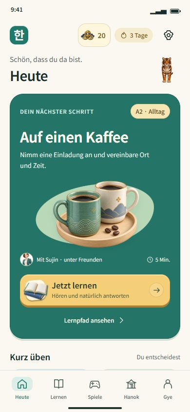
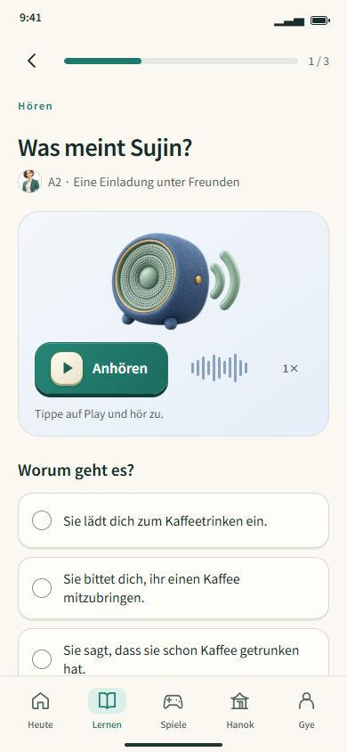
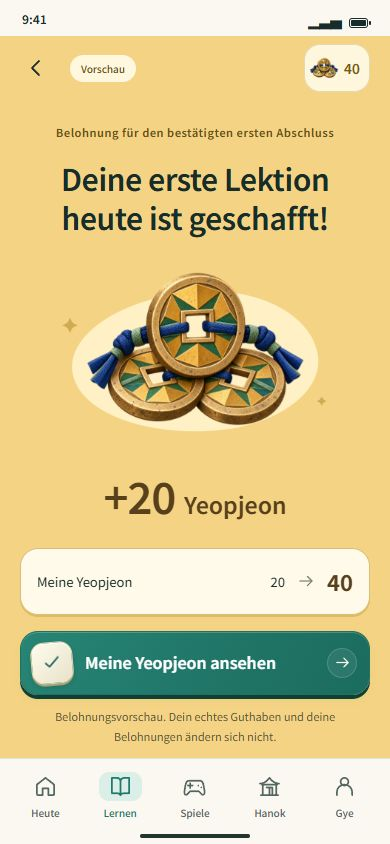

장면마다 다른 다음 행동
기존 서체와 오브젝트를 사용했습니다. 텍스트는 행동을 설명하고, 재질과 깊이는 누를 수 있는 표면을 보여줍니다.



390 × 844 브라우저 검토 시안입니다. 실제 계정·진도·보상을 변경하지 않습니다. 터치 기기에서는 접촉 전 손가락의 위치를 감지하지 않으며, 접촉·누름·놓음에 반응합니다. 마우스와 키보드는 hover·focus로 같은 의도를 전달합니다.
참조: Emote · Planner의 색면과 집중된 피드백, Eddie Luong · Chatbot Concept의 맥락과 행동 배치, Apple · Buttons의 아이콘·문구와 버튼 상태.